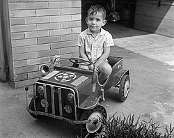
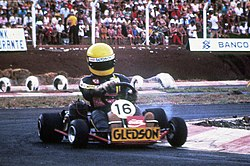
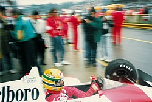
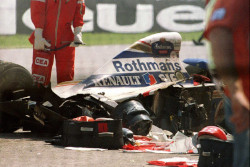
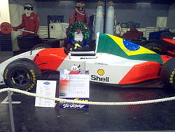

Ayrton Senna da Silva nasceu no dia 21 de março de 1960, em São Paulo, no bairro Santana. Filho de Milton da Silva e Neide Senna da Silva, Ayrton cresceu em uma família de classe média alta, cercado de amor e incentivo. Desde pequeno, demonstrava habilidades motoras acima da média e um interesse natural por carros e mecânica. Aos quatro anos de idade, seu pai lhe construiu um kart motorizado, dando início à paixão que definiria toda sua vida.
Atalhos:
Infância e juventude

Início no automobilismo

Senna começou sua carreira no kart aos 13 anos, participando do Campeonato Paulista de Kart em 1973, onde venceu logo na estreia. Dominou o cenário nacional e brilhou também em competições internacionais, sendo vice-campeão mundial de kart por duas vezes (1979 e 1980).
No início da década de 1980, mudou-se para a Europa para competir nas categorias de base. Lá, foi campeão britânico de Fórmula Ford 1600 em 1981 e de Fórmula Ford 2000 em 1982. Em 1983, venceu o Campeonato Britânico de Fórmula 3, o que abriu as portas para a Fórmula 1.
Chegada à Fórmula 1

Senna estreou na Fórmula 1 em 1984, pela equipe Toleman-Hart, já chamando atenção com atuações impressionantes. Em 1985, foi contratado pela Lotus, onde conquistou suas três primeiras vitórias e 16 pole positions.
A era McLaren e os títulos mundiais


Em 1988, Senna se juntou à equipe McLaren, onde viveu os anos mais marcantes de sua carreira. Venceu 8 corridas e conquistou seu primeiro título mundial. Ganhou novamente em 1990 e 1991.
A mudança para a Williams e o acidente fatal

Em 1994, Senna se transferiu para a equipe Williams. No dia 1º de maio, durante o GP de San Marino, sofreu um acidente fatal. Sua morte comoveu o mundo e parou o Brasil.
Legado e impacto

Mesmo após sua morte, Ayrton Senna continua sendo uma das figuras mais admiradas do esporte. O Instituto Ayrton Senna ajuda milhões de jovens no Brasil, perpetuando seu legado.